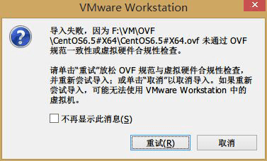

<!DOCTYPE html>
<html>
<head>
  <meta charset="utf-8">
  <meta name="baidu-site-verification" content="1ZsVVOmjoT">
  
  <title>开放虚拟化格式之OVF-OVA | geosmart</title>
  <meta name="viewport" content="width=device-width,initial-scale=1,maximum-scale=1">
  <meta name="description" content="&amp;#x9047;&amp;#x5230;Sphere6.0 (esxi6 )&amp;#x5BFC;&amp;#x51FA;&amp;#x7684;OVF&amp;#x865A;&amp;#x62DF;&amp;#x673A;&amp;#x6A21;&amp;#x677F;&amp;#x5728;Vmware WorkStation 9&amp;#x548C;VmWare WorkStation11&amp;#x4E2D;&amp;#x5BFC;&amp;#x5165;&amp;#x62A5;&amp;#x9519;&amp;#x">
<meta property="og:type" content="article">
<meta property="og:title" content="开放虚拟化格式之OVF-OVA">
<meta property="og:url" content="http://geosmart.github.io/2015/07/12/开放虚拟化格式之OVF-OVA/index.html">
<meta property="og:site_name" content="geosmart">
<meta property="og:description" content="&amp;#x9047;&amp;#x5230;Sphere6.0 (esxi6 )&amp;#x5BFC;&amp;#x51FA;&amp;#x7684;OVF&amp;#x865A;&amp;#x62DF;&amp;#x673A;&amp;#x6A21;&amp;#x677F;&amp;#x5728;Vmware WorkStation 9&amp;#x548C;VmWare WorkStation11&amp;#x4E2D;&amp;#x5BFC;&amp;#x5165;&amp;#x62A5;&amp;#x9519;&amp;#x">
<meta property="og:image" content="http://geosmart.github.io/errorInfo.png">
<meta property="og:updated_time" content="2015-07-19T03:30:23.860Z">
<meta name="twitter:card" content="summary">
<meta name="twitter:title" content="开放虚拟化格式之OVF-OVA">
<meta name="twitter:description" content="&amp;#x9047;&amp;#x5230;Sphere6.0 (esxi6 )&amp;#x5BFC;&amp;#x51FA;&amp;#x7684;OVF&amp;#x865A;&amp;#x62DF;&amp;#x673A;&amp;#x6A21;&amp;#x677F;&amp;#x5728;Vmware WorkStation 9&amp;#x548C;VmWare WorkStation11&amp;#x4E2D;&amp;#x5BFC;&amp;#x5165;&amp;#x62A5;&amp;#x9519;&amp;#x">
  
  
    <link rel="icon" href="/favicon.png">
  

  <link rel="stylesheet" href="/css/style.css" type="text/css">
  
    <link rel="stylesheet" href="/fancybox/jquery.fancybox.css" type="text/css">
  
  
    <link rel="stylesheet" href="/scrollLoading/style.css" type="text/css">
  
   <!-- geosmart -->
  <!-- Baidu Analytics -->
<script type="text/javascript">
    var _hmt = _hmt || [];
    (function () {
        var hm = document.createElement("script");
        hm.src = "//hm.baidu.com/hm.js?221699150bf25edfe6338d0a9f205159";
        var s = document.getElementsByTagName("script")[0];
        s.parentNode.insertBefore(hm, s);
    })();
</script>
<!-- End Baidu Analytics -->
   <!-- geosmart -->

  

  
    <style type="text/css">
      .logo { background-image:url(http://geosmart.github.io/css/images/logo.png); }
    </style>
  

  
    <link href="//fonts.useso.com/css?family=Titillium+Web:300,400,600" rel="stylesheet" type="text/css">
    <link href="//fonts.useso.com/css?family=Source+Code+Pro" rel="stylesheet" type="text/css">
  

</head></html>
<body>
  <div id="wrap">
    <header id="header">
  <div id="header-outer" class="outer">
    <div class="container">
      <div class="container-inner">
        <div id="header-title">
          <h1 class="logo-wrap">
            <a href="/" class="logo"></a>
          </h1>
          
            <h2 class="subtitle-wrap">
              <p class="subtitle">生命不止 奋斗不息</p>
            </h2>
          
        </div>
        <div id="header-inner" class="nav-container">
          <a id="main-nav-toggle" class="nav-icon"></a>
          <div class="nav-container-inner">
            <ul id="main-nav">
              
                <li class="main-nav-list-item"><a class="main-nav-list-link" href="/">Home</a></li>
              
                    <ul class="main-nav-list"><li class="main-nav-list-item"><a class="main-nav-list-link" href="/categories/大数据/">大数据</a></li><li class="main-nav-list-item"><a class="main-nav-list-link" href="/categories/技术点滴/">技术点滴</a></li><li class="main-nav-list-item"><a class="main-nav-list-link" href="/categories/运维/">运维</a></li></ul>
                  
                <li class="main-nav-list-item"><a class="main-nav-list-link" href="/about/index.html">About</a></li>
              
            </ul>
            <nav id="sub-nav">
              <div id="search-form-wrap">
                <form action="//google.com/search" method="get" accept-charset="UTF-8" class="search-form"><input type="search" name="q" results="0" class="search-form-input" placeholder="搜索"><input type="hidden" name="sitesearch" value="http://geosmart.github.io"></form>
              </div>
            </nav>
          </div>
        </div>
      </div>
    </div>
  </div>
</header>
    <div class="container">
      <div class="main-body container-inner">
        <div class="main-body-inner">
          <section id="main">
            <div class="main-body-header">

              <h1 class="header"><a class="page-title-link" href="/categories/技术点滴/">技术点滴</a></h1>
            </div>
            <div class="main-body-content">
              <article id="post-开放虚拟化格式之OVF-OVA" class="article article-single article-type-post" itemscope itemprop="blogPost">
    <div class="article-inner">
      <!--  -->
      
        <header class="article-header">
          <h1 class="article-title" itemprop="name">
      开放虚拟化格式之OVF-OVA
    </h1>
        </header>
        
      <p class="article-byline">
        <a href="/2015/07/12/开放虚拟化格式之OVF-OVA/" class="article-date">
  <time datetime="2015-07-12T14:05:44.000Z" itemprop="datePublished">12   七月   2015</time>
</a>
      </p> 

      <!--geosmart 待优化toc样式-->
      <article class="article article-summary">
           <ol class="toc"><li class="toc-item toc-level-2"><a class="toc-link" href="#解决方式"><span class="toc-number">1.</span> <span class="toc-text">解决方式</span></a></li><li class="toc-item toc-level-2"><a class="toc-link" href="#ovf"><span class="toc-number">2.</span> <span class="toc-text">OVF</span></a></li><li class="toc-item toc-level-2"><a class="toc-link" href="#ova"><span class="toc-number">3.</span> <span class="toc-text">OVA</span></a></li></ol> 
      </article>
      <!--geosmart 待优化toc样式-->

      <div class="article-entry" itemprop="articleBody"> 
        <p>&#x9047;&#x5230;Sphere6.0 (esxi6 )&#x5BFC;&#x51FA;&#x7684;OVF&#x865A;&#x62DF;&#x673A;&#x6A21;&#x677F;&#x5728;Vmware WorkStation 9&#x548C;VmWare WorkStation11&#x4E2D;&#x5BFC;&#x5165;&#x62A5;&#x9519;&#x7684;&#x95EE;&#x9898;&#xFF0C;&#x6682;&#x6539;&#x6210;OVA&#x683C;&#x5F0F;&#x8FDB;&#x884C;&#x6570;&#x636E;&#x4EA4;&#x6362;&#x3002;</p>
<p>#&#x95EE;&#x9898;&#x63CF;&#x8FF0;
</p>
<h2 id="&#x89E3;&#x51B3;&#x65B9;&#x5F0F;">&#x89E3;&#x51B3;&#x65B9;&#x5F0F;</h2>
<p>&#x4EE5;OVA&#x683C;&#x5F0F;&#x8FDB;&#x884C;&#x6570;&#x636E;&#x4EA4;&#x6362;
VMware&#x5BFC;&#x51FA;&#x65F6;&#x5C06;&#x540E;&#x7F00;&#x6539;&#x4E3A;OVA&#x540E;&#x5230;&#x5904;&#xFF1B;ESXI&#x5BFC;&#x51FA;&#x65F6;&#x9009;OVA</p>
<p>#&#x57FA;&#x7840;&#x77E5;&#x8BC6;</p>
<h2 id="ovf">OVF</h2>
<p>OVF&#xFF08;Open Virtualization Format&#xFF1A;&#x5F00;&#x653E;&#x865A;&#x62DF;&#x5316;&#x683C;&#x5F0F; &#xFF09;
OVF&#x662F;&#x4E00;&#x79CD;&#x5F00;&#x6E90;&#x7684;&#x6587;&#x4EF6;&#x89C4;&#x8303;&#xFF0C;&#x5B83;&#x63CF;&#x8FF0;&#x4E86;&#x4E00;&#x4E2A;&#x5F00;&#x6E90;&#x3001;&#x5B89;&#x5168;&#x3001;&#x6709;&#x6548;&#x3001;&#x53EF;&#x62D3;&#x5C55;&#x7684;&#x4FBF;&#x643A;&#x5F0F;&#x865A;&#x62DF;&#x6253;&#x5305;&#x4EE5;&#x53CA;&#x8F6F;&#x4EF6;&#x5206;&#x5E03;&#x683C;&#x5F0F;&#xFF0C;&#x5B83;&#x4E00;&#x822C;&#x6709;&#x51E0;&#x4E2A;&#x90E8;&#x5206;&#x7EC4;&#x6210;&#xFF0C;&#x5206;&#x522B;&#x662F;ovf&#x6587;&#x4EF6;&#x3001;mf&#x6587;&#x4EF6;&#x3001;cert&#x6587;&#x4EF6;&#x3001;vmdk&#x6587;&#x4EF6;&#x548C;iso&#x6587;&#x4EF6;&#x3002;</p>
<h2 id="ova">OVA</h2>
<p>OVA&#xFF08;Open Virtualization Appliance&#xFF1A;&#x5F00;&#x653E;&#x865A;&#x62DF;&#x5316;&#x8BBE;&#x5907;&#xFF09;
OVA&#x5305;&#x662F;&#x4E00;&#x4E2A;&#x5355;&#x4E00;&#x7684;&#x6587;&#x4EF6;&#xFF0C;&#x6240;&#x6709;&#x5FC5;&#x8981;&#x7684;&#x4FE1;&#x606F;&#x90FD;&#x5C01;&#x88C5;&#x5728;&#x91CC;&#x9762;&#x3002;OVA&#x6587;&#x4EF6;&#x5219;&#x91C7;&#x7528;.tar&#x6587;&#x4EF6;&#x6269;&#x5C55;&#x540D;,&#x5305;&#x542B;&#x4E86;&#x4E00;&#x4E2A;OVF &#x5305;&#x4E2D;&#x6240;&#x6709;&#x6587;&#x4EF6;&#x7C7B;&#x578B;&#x3002;&#x8FD9;&#x6837;OVA&#x5355;&#x4E00;&#x7684;&#x6587;&#x4EF6;&#x683C;&#x5F0F;&#x4F7F;&#x5F97;&#x5B83;&#x975E;&#x5E38;&#x4FBF;&#x643A;&#x3002;</p>
      </div>
      <footer class="article-footer">
        <a data-url="http://geosmart.github.io/2015/07/12/开放虚拟化格式之OVF-OVA/" data-id="cie2b3i1f001crwpa9qnpctw2" class="article-share-link">分享到</a>
        
          <a href="http://geosmart.github.io/2015/07/12/开放虚拟化格式之OVF-OVA/#comments" class="article-comment-link">评论</a>
        
        <ul class="article-tag-list"><li class="article-tag-list-item"><a class="article-tag-list-link" href="/tags/运维/">运维</a></li></ul>
      </footer>
    </div>
  </article>


<section id="comments">
    <!-- ¶à˵ÆÀÂÛ¿ò start -->
    <div class="ds-thread" data-thread-key="post-开放虚拟化格式之OVF-OVA" data-title="开放虚拟化格式之OVF-OVA" data-url="http://geosmart.github.io/2015/07/12/开放虚拟化格式之OVF-OVA/"></div>
    <!-- ¶à˵ÆÀÂÛ¿ò end -->
    <!-- ¶à˵¹«¹²JS´úÂë start (Ò»¸öÍøÒ³Ö»Ðè²åÈëÒ»´Î) -->
    <script type="text/javascript">
        var duoshuoQuery = {short_name: 'geosmart'};
        (function () {
            var ds = document.createElement('script');
            ds.type = 'text/javascript';
            ds.async = true;
            ds.src = (document.location.protocol == 'https:' ? 'https:' : 'http:') + '//static.duoshuo.com/embed.js';
            ds.charset = 'UTF-8';
            (document.getElementsByTagName('head')[0]
            || document.getElementsByTagName('body')[0]).appendChild(ds);
        })();
    </script>
    <!-- ¶à˵¹«¹²JS´úÂë end -->
</section>
            </div>
          </section>
          <aside id="sidebar">
  <a class="sidebar-toggle" title="Expand Sidebar"><i class="toggle icon"></i></a>
  <div class="sidebar-top">
    <p>关注我 :</p>
    <ul class="social-links">
      
        <li><a class="social-tooltip" title="github" href="https://github.com/geosmart" target="_blank"><i id="icon-github" class="icon"></i></a></li>
      
        <li><a class="social-tooltip" title="weibo" href="http://weibo.com/geosmart" target="_blank"><i id="icon-weibo" class="icon"></i></a></li>
      
        <li><a class="social-tooltip" title="google_plus" href="/" target="_blank"><i id="icon-google_plus" class="icon"></i></a></li>
      
        <li><a class="social-tooltip" title="rss" href="/atom.xml" target="_blank"><i id="icon-rss" class="icon"></i></a></li>
      
    </ul>
  </div>
  
    <nav id="article-nav">
  
    <a href="/2015/07/15/xmanager实现CentOS远程控制/" id="article-nav-newer" class="article-nav-link-wrap">
      <strong class="article-nav-caption">下一篇</strong>
      <p class="article-nav-title">
        
          xmanager实现CentOS远程控制
        
      </p>
      <i class="icon" id="icon-chevron-right"></i>
    </a>
  
  
    <a href="/2015/07/12/磁盘阵列配置/" id="article-nav-older" class="article-nav-link-wrap">
      <strong class="article-nav-caption">上一篇</strong>
      <p class="article-nav-title">磁盘阵列配置</p>
      <i class="icon" id="icon-chevron-left"></i>
    </a>
  
</nav>
  
  <div class="widgets-container">
    
      <div class="widget-wrap">
    <h3 class="widget-title">最新文章</h3>
    <div class="widget">
      <ul id="recent-post" class="no-thumbnail">
        
          <li>
            
            <div class="item-inner">
              <p class="item-category"></p>
              <p class="item-title"><a href="/2015/09/01/基于SolrCloud-Lily Hbase Indexer-Morphline实现Hbase二级索引/" class="title">基于SolrCloud-Lily Hbase Indexer-Morphline实现Hbase二级索引</a></p>
              <p class="item-date"><time datetime="2015-09-01T11:41:27.000Z" itemprop="datePublished">1   九月   2015</time></p>
            </div>
          </li>
        
          <li>
            
            <div class="item-inner">
              <p class="item-category"><a class="article-category-link" href="/categories/技术点滴/">技术点滴</a></p>
              <p class="item-title"><a href="/2015/08/16/一路见识的SQL-NOSQL数据库ORM/" class="title">一路见识的SQL/NOSQL数据库ORM</a></p>
              <p class="item-date"><time datetime="2015-08-16T12:02:08.000Z" itemprop="datePublished">16   八月   2015</time></p>
            </div>
          </li>
        
          <li>
            
            <div class="item-inner">
              <p class="item-category"><a class="article-category-link" href="/categories/大数据/">大数据</a></p>
              <p class="item-title"><a href="/2015/08/11/Hadoop生态圈/" class="title">Hadoop生态圈</a></p>
              <p class="item-date"><time datetime="2015-08-11T08:29:41.000Z" itemprop="datePublished">11   八月   2015</time></p>
            </div>
          </li>
        
          <li>
            
            <div class="item-inner">
              <p class="item-category"></p>
              <p class="item-title"><a href="/2015/08/08/Hadoop集群部署/" class="title">Hadoop集群部署</a></p>
              <p class="item-date"><time datetime="2015-08-08T03:38:22.000Z" itemprop="datePublished">8   八月   2015</time></p>
            </div>
          </li>
        
          <li>
            
            <div class="item-inner">
              <p class="item-category"><a class="article-category-link" href="/categories/运维/">运维</a></p>
              <p class="item-title"><a href="/2015/08/05/Python安装升级教程/" class="title">Python安装升级教程</a></p>
              <p class="item-date"><time datetime="2015-08-05T12:32:44.000Z" itemprop="datePublished">5   八月   2015</time></p>
            </div>
          </li>
        
      </ul>
    </div>
  </div>
    
      <div class="widget-wrap widget-list">
    <h3 class="widget-title">分类</h3>
    <div class="widget">
      <ul class="category-list"><li class="category-list-item"><a class="category-list-link" href="/categories/大数据/">大数据</a><span class="category-list-count">1</span></li><li class="category-list-item"><a class="category-list-link" href="/categories/技术点滴/">技术点滴</a><span class="category-list-count">18</span></li><li class="category-list-item"><a class="category-list-link" href="/categories/运维/">运维</a><span class="category-list-count">2</span></li></ul>
    </div>
  </div>
    
      <div class="widget-wrap widget-list">
    <h3 class="widget-title">归档</h3>
    <div class="widget">
      <ul class="archive-list"><li class="archive-list-item"><a class="archive-list-link" href="/archives/2015/09/">九月 2015</a><span class="archive-list-count">1</span></li><li class="archive-list-item"><a class="archive-list-link" href="/archives/2015/08/">八月 2015</a><span class="archive-list-count">5</span></li><li class="archive-list-item"><a class="archive-list-link" href="/archives/2015/07/">七月 2015</a><span class="archive-list-count">7</span></li><li class="archive-list-item"><a class="archive-list-link" href="/archives/2015/06/">六月 2015</a><span class="archive-list-count">10</span></li></ul>
    </div>
  </div>
    
      <div class="widget-wrap widget-float">
    <h3 class="widget-title">标签云</h3>
    <div class="widget tagcloud">
      <a href="/tags/CDH/" style="font-size: 14px">CDH</a> <a href="/tags/CentOS/" style="font-size: 20px">CentOS</a> <a href="/tags/Hadoop/" style="font-size: 14px">Hadoop</a> <a href="/tags/Hbase/" style="font-size: 10px">Hbase</a> <a href="/tags/J2EE/" style="font-size: 10px">J2EE</a> <a href="/tags/Python/" style="font-size: 10px">Python</a> <a href="/tags/Shell/" style="font-size: 10px">Shell</a> <a href="/tags/Solr/" style="font-size: 10px">Solr</a> <a href="/tags/Web服务器/" style="font-size: 16px">Web服务器</a> <a href="/tags/backbone/" style="font-size: 10px">backbone</a> <a href="/tags/分布式/" style="font-size: 14px">分布式</a> <a href="/tags/前端/" style="font-size: 10px">前端</a> <a href="/tags/大数据/" style="font-size: 14px">大数据</a> <a href="/tags/工具/" style="font-size: 14px">工具</a> <a href="/tags/技术点滴/" style="font-size: 10px">技术点滴</a> <a href="/tags/数据库/" style="font-size: 14px">数据库</a> <a href="/tags/监控/" style="font-size: 12px">监控</a> <a href="/tags/硬件/" style="font-size: 10px">硬件</a> <a href="/tags/运维/" style="font-size: 18px">运维</a>
    </div>
  </div>
    
      <div class="widget-wrap widget-list">
    <h3 class="widget-title">链接</h3>
    <div class="widget">
      <ul>
        
          <li>
            <a href="http://hexo.io">Hexo</a>
          </li>
        
          <li>
            <a href="http://ltsoft.github.io">ltsoft</a>
          </li>
        
      </ul>
    </div>
  </div>
    
  </div>
</aside>
        </div>
      </div>
    </div>
    <footer id="footer">
  
  <div class="container">
    <div class="container-inner">
      <a id="back-to-top" href="javascript:;"><i class="icon" id="icon-angle-up"></i></a>
      <div class="credit">
        <h1 class="logo-wrap">
          <a href="/" class="logo"></a>
        </h1>
        <p>&copy; 2015 geosmart</p>
        <p>Powered by <a href="//hexo.io/" target="_blank">Hexo</a>. Theme by <a href="//github.com/ppoffice" target="_blank">PPOffice</a></p>
      </div>
    </div>
  </div>
</footer>
    <script src="http://code.jquery.com/jquery-2.1.3.min.js"></script>


  <script src="/fancybox/jquery.fancybox.pack.js" type="text/javascript"></script>


  <script src="/scrollLoading/jquery.scrollLoading.js" type="text/javascript"></script>
  <script src="/scrollLoading/main.js" type="text/javascript"></script>


<script src="/js/html-patch.js" type="text/javascript"></script>
<script src="/js/script.js" type="text/javascript"></script>
  </div>
</body>
